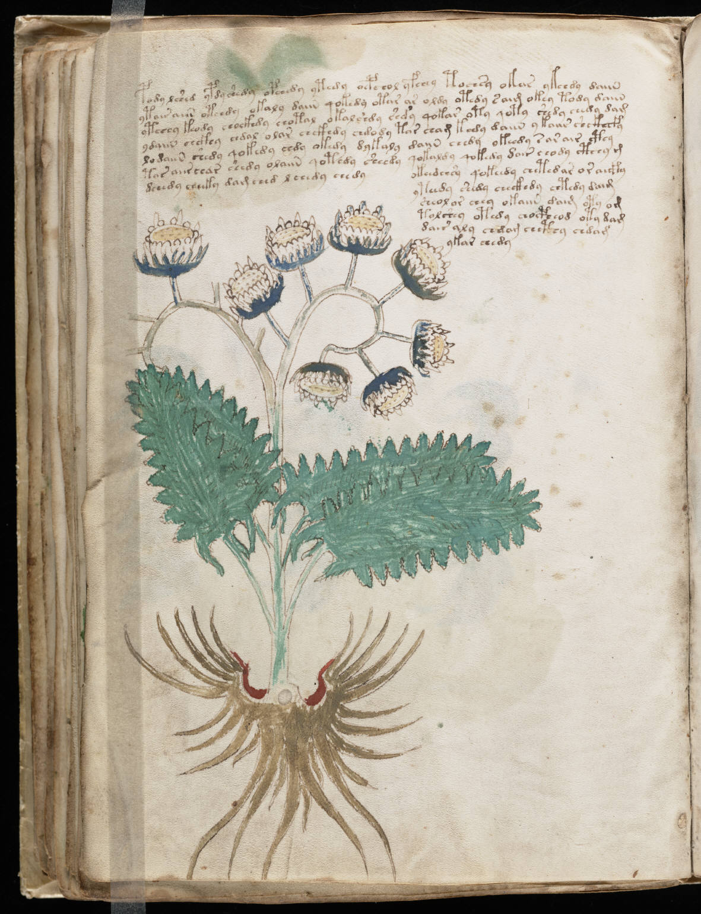

f46v
1pody lshed ypdy shedy opchedy ytedy oepchol yfchey tochsy okas ykchdy daiin2ytasr aiin otchdy okaly daiin qokedy otar ar oldy otedy saim okey tody daiin3ytchey keody chockhdy chotal okalshdy shdy qokar oty qoty shedy chedy dam4ydaiin chckhy chdal olar chckhdy chdody tar cham kedy daiin ykaiir shckhefy5lodaiin shedy qokedy chdy okedy dykalydaiin chedy okeedy s ar air cthy6tos aiirchar chedy olaiin qotedy sheedyqokaldy qokedy dair chody cthhy m7dchedy cheeky dam ched l chedy chedyokeedchsy qokeedy chetedar or aicky8yteedy shedy checkhdy chtedy daim9sheol or chey okaiin daim oty om10tolshey otedy chocpheod oty dam11dair aly chdam chcthy chdam12ykar chedy
